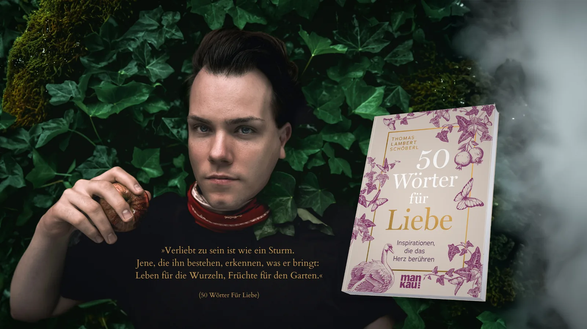

Von Abschied über Outing bis Zärtlichkeit: Eine Reise ins Herz des Lebens. Mit berührenden Anekdoten, tiefgründigen Essays, poetischen Gedichten, fesselnden Geschichten und praktischen Übungen.
Dies ist kein Buch zum schnellen Durchlesen. Es ist ein wunder-volles Werk, welches – wie die Liebe – erforscht werden möchte und zur eigenen Entdeckung anregt. Danke.
Sabrina Fox · Bestsellerautorin & Moderatorin
Aus dem Buch
Ich kann nicht anders.
Ich muss schreiben.
Mich an Worten, Versen reiben.
Was oft bleibt stumm – in Reimen laut,
Weil - Alltag uns die Sterne klaut.
Nichts Neues habe ich erdacht?
Worüber nicht schon frech gelacht.
Woran schon Herzen sind zerbrochen,
Was Freunde ewig sich versprochen.
Und doch, in jedem Wort, das fällt,
Erblüht ein Stück von meiner Welt.
In Strophen find' ich neuen Mut,
Kann formen: Schmerzen, Eifer, Wut.
Im Vers, da ruft ein wildes Streben,
Zu finden einen Sinn im Leben.
Und weil Du's liest, so teil'n wir doch –
Ein kleines Stück vom Dichterjoch.

Über das Buch
Liebe ist mehr als nur ein Gefühl – sie ist eine Lebenshaltung, ein fortwährendes Abenteuer, ein erhabener Pfad. Sie besitzt die wundervolle Kraft, Menschen zu formen, zu heilen und zu vereinen.
In Mika Maria Schöberls Werk entfaltet sich die Liebe in all ihren Ausdrucksformen – unerwartet, anders, zart. Jeder der 50 sorgfältig ausgewählten Begriffe öffnet ein Tor zu neuen Perspektiven und Erfahrungen: niemals als Zufall, immer als zauberhafte Möglichkeit.
In einer Zeit, in der Konflikte, Kriege und Zwietracht Gesellschaft, Freundschaften und Beziehungen teilen, ist dieses Buch ein Bollwerk der Liebe inmitten der Polarisierung, der digitalen Vereinsamung und der erstarkenden Gleichgültigkeit – ein zeitgemäßer Kompass für alle, die nach Verbindung suchen.
Ein kostbares Geschenk für die Seele – zum Selbstlesen und zum Verschenken.
Inhaltsverzeichnis
Videos zum Buch
„Die Liebe ist eine Wunde", so schreibt der junge, hoffnungstragende Poet, doch die Heilung bietet er gleich mit an: In der schier unglaublichen Kraft des Wortes! Wenn die Natur dichten könnte und wollte, so würde sie schreiben wie Mika Maria Schöberl. Hier wird dem staunenden Leser bewusst: Am Anfang, oder im Anfang, war das Wort – das wohlwollende, lebensbejahende Wort, und wir haben die Verpflichtung, diese Worte heilend und schaffend einzusetzen. So geschieht es hier, Zeile für Zeile. Ein „Hinter-dem-Spiegel"-Autor ist dieser Wortmaler mit heilenden Gedanken; die Sätze fließen ihm leicht von der Hand hinein in die 50 Texte eines ansprechend gestalteten Buches. Da kommen Champagnerperlen der Lebenskraft mitten aus dem Herzen. Nichts ist zu sehr intellektualisiert; das empfindende Gemüt führt die Feder. Könnte man dem Wort-Schatz „Wörter für die Liebe" eine Farbe zuordnen, wäre es wohl das tiefe Blau der Transzendenz. Nicht nur lesenswert, sondern eine Textsammlung zum Verinnerlichen!
In unserer Leistungsgesellschaft hat sich der moderne Mensch weit von seinen Wurzeln entfernt. Chronische Erkrankungen und psychosomatische Beschwerden haben sich mehr und mehr zu Volksleiden entwickelt. Ist das wirklich unser Schicksal?
Mika Maria Schöberl kennt einen anderen Weg: Um nachhaltig und mit neuer Kreativität Herausforderungen unserer Zeit anpacken zu können, empfiehlt er, den Wundern der Natur und der ganzheitlichen Betrachtung der Welt und des Menschen wieder Raum zu geben und uns ihrer Bedeutung für Körper, Geist und Seele bewusst zu werden.
Viele Menschen spüren immer deutlicher die Sehnsucht nach der Natur, nach mehr Ursprünglichkeit in ihrem Leben und einer neuen Definition des Lebenssinns. Auf poetische und doch ganz unmittelbare Weise erzählt der Autor von seinem eigenen Weg der Genesung und dem Prozess seiner Persönlichkeitsentwicklung.
Als Heilpraktiker, Musiker und Kunstwissenschaftler entführt er uns einfühlsam in eine längst vergessene Bildsprache, die uns den immateriellen Reichtum und die unzähligen Perspektiven eines ganzheitlichen Weltbildes aufzeigt.
„Ja, wir sind wie Bäume mit starken Wurzeln, wir sind die Melodien eines kosmischen Reigens und die Gebete einer fortwährenden Schöpfung. Diesen Wurzeln, diesen inneren Gesängen, diesen kraftvollen Funken der Hoffnung sollten wir folgen – auch ins Ungewisse, in die tiefe Erde … bis in unsere Seelen."
Mit dem Titel „Grüne Seelen" legt Mika Maria Schöberl ein herausragendes Buch vor, das gleichermaßen berührt wie inspiriert. Er packt die Ursache jeglichen psychosomatischen Leidens, ergo die Tatsache, dass der Mensch den Kontakt zu sich selbst und zur Natur verloren hat, verbal trefflich an der Wurzel, lässt seine Leser mit dieser Erkenntnis aber nicht im Regen stehen. Vielmehr zeigt der Autor vielfältige Wege zurück in ein naturgemäßes Leben und verhilft dem längst inflationär gebrauchten Begriff der Ganzheitlichkeit zu neuen Würden. Lesenswert, bereichernd und zukunftsweisend.